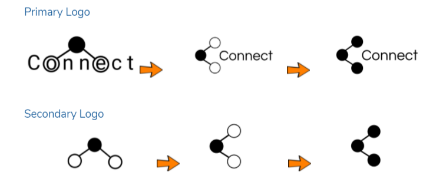
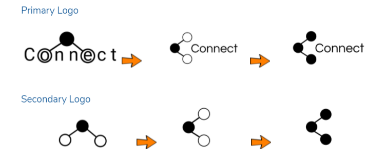

The Loft
 Visit Prototype
Visit Prototype
Project Background:
These are extraordinary times, and countries from all around the world are struggling to keep their economy from crashing while maintaining the health and safety of their fellow citizens. A new video conferencing platform called The Loft has been created to bridge the gap caused by the pandemic.
Objective:
Creating a desktop site for a video conferencing platform where meetings and virtual functions can be organized and managed with well-established features.
My Role:
UX Researcher, UX Designer
Project Duration:
4 weeks
Tools:
Figma, Google Forms, Google Sheets


 
